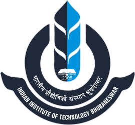

M.Tech student at IIT BhubaneswarSpecializing in Computer Vision, Multimodal Learning, and LLM Fine-Tuning. Pursuing Master of Technology in Artificial Intelligence at the Indian Institute of Technology, Bhubaneswar.
From foundational schooling and board examinations to undergraduate computer science and advanced artificial intelligence research at IIT Bhubaneswar.
Master of Technology (M.Tech) in Artificial Intelligence
Advanced graduate program focusing on core mathematical foundations of machine learning, modern deep learning architectures, computer vision, and multimodal foundation models. Actively serving as Teaching Assistant for undergraduate courses.
Bachelor of Technology (B.Tech) in Computer Science & Engineering
Comprehensive undergraduate engineering curriculum in computer systems, algorithms, software engineering, and computational intelligence. Graduated with First Class Distinction.
Higher Secondary (Class XII) • WBCHSE • Science Stream
Focused rigorous study in pure and applied sciences, higher mathematics, physics, and computing with top honors.
Secondary (Class X) • WBBSE (Madhyamik)
Strong foundational academics across mathematics, general sciences, social sciences, and languages with outstanding school performance.
Middle School (Classes V – VIII)
Early schooling that built the foundation in mathematics, science, and languages.
Browse dedicated sections detailing technical expertise, published research, leadership positions, credentials, and extracurricular pursuits.
Proficiencies in Python, C++, PyTorch, TensorFlow 2, LangChain, HuggingFace, Multimodal Learning, PEFT/LoRA fine-tuning, and spoken languages.
8 deep learning & CV research projects: Illumination-Invariant PAR, GeoVQA, Bridge-VQA, HandPD Parkinson's detection, ELVE-Retinex, Brain Tumor Segmentation, and Satellite Water Bodies.
Teaching Assistant for Digital Logic at IIT Bhubaneswar, AstroML Course Instructor for 100+ students at Nakshatra, and Founding Member & Director of Space Science at CARQ.
Verified credentials from Stanford University, DeepLearning.AI, AWS, Imperial College London, and University of Sydney in Machine Learning, Generative AI, GANs, and Mathematics for ML.
Personal interests in astrophysics, digital 3D/2D art, physics simulations, competitive coding, and notable life achievements.
Interested in discussing computer vision, multimodal intelligence, or prospective research collaborations? Feel free to reach out directly through any of the channels below.
Location: Indian Institute of Technology, Bhubaneswar, Odisha, India